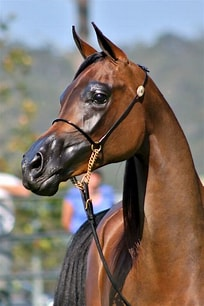
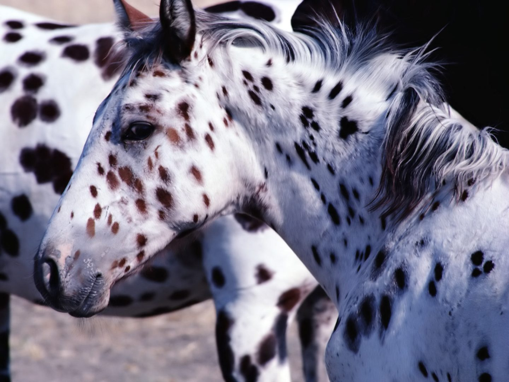
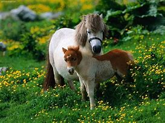

| arabe | appalosa | cuarto de milla | pura sangre | ponnys |
| caballoos con facciones muy finas muy finos | caballos con gran rostuves de trabajo pesado con un color muy exotico | caballos muy versalites grandes hablidades ecuestres | son caballos con una destreza inimaginable para las carreras | caballos creados para el trabajo en minas de gran corazon y muchas fuerzas |
|  |  | |
|
 |